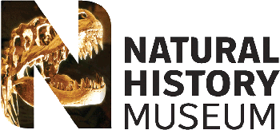

London 2005

6th - 10th September 2005

</div >The 53rd SVPCA and the 14th SPPC
was held at the Natural History Museum, London. The lecture and poster sessions were held in the Museum; SPPC in the Demonstration Room, Department of Palaeontology and SVPCA in the Flett Lecture Theatre.
For more details on the SPPC follow the link on the right of this page.
Photographs
taken during the symposium are posted here as usual.
The programme
has been revised to include changes made during the symposium.
Abstracts
can be downloaded as a pdf here.
Host Committee
Angela Milner - The Natural History Museum, London
Lorraine Cornish and Adrian Doyle (SPPC organizers)